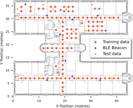

OpenHPS: Single Floor Fingerprinting and Trajectory Dataset
This dataset contains fingerprint information of WLAN access points and BLE beacons with a known position and IMU sensor data. Data was collected on the floor of the Web and Information Systems Engineering (WISE) Lab at the VUB (Pleinlaan 9, 3rd floor) with 110 training reference points and 30 test data points. Each reference point was recorded for 20 seconds in four different orientations.
The dataset was created using an OpenHPS Android application for publication in the eleventh edition of the International Conference on Indoor Positioning and Indoor Navigation.
Publication Reference
Van de Wynckel, Maxim, & Signer, Beat. (2021). OpenHPS: Single Floor Fingerprinting and Trajectory Dataset (Version 2021-05-09) [Data set]. Zenodo. http://doi.org/10.5281/zenodo.4744380